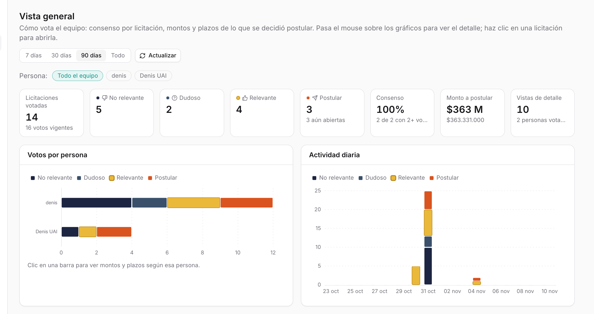
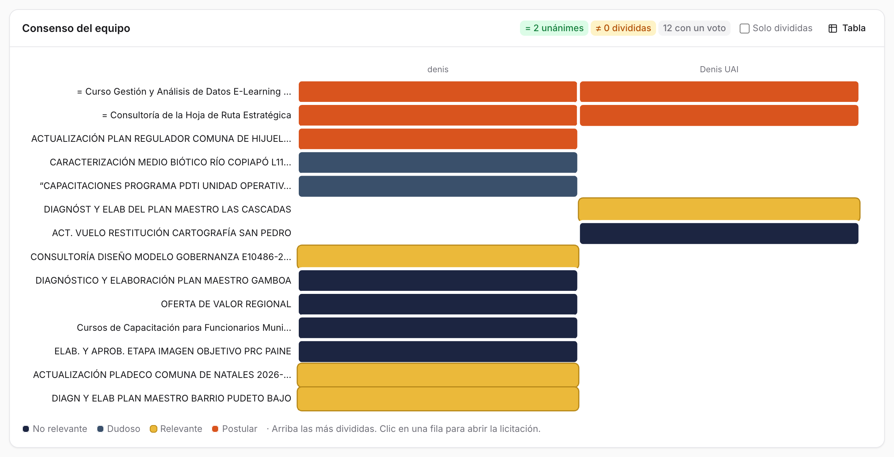
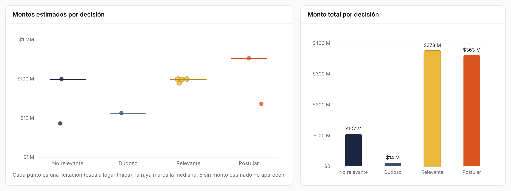
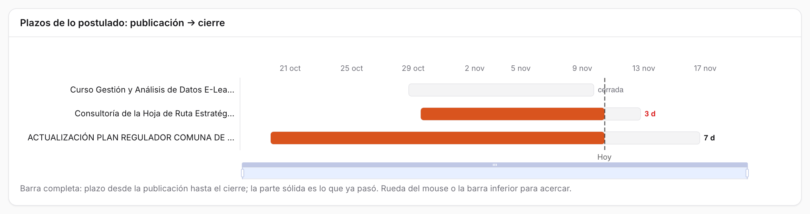
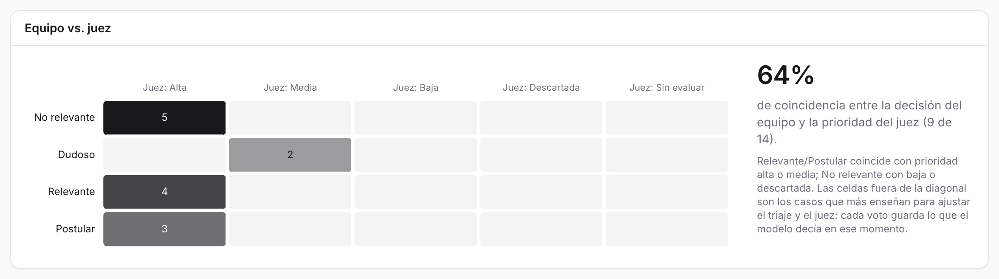

14 Vista general
La vista general muestra cómo vota el equipo: cuántas licitaciones etiquetó cada persona, en cuáles coinciden y en cuáles no, cuánta plata hay detrás de cada decisión, cuánto plazo les queda a las que se decidió postular y qué tan de acuerdo está el equipo con el juez. Disponible desde el rol lectura, segunda en la barra lateral, dentro de Trabajo.
La bandeja sirve para decidir licitación por licitación. La vista general sirve para mirar las decisiones en conjunto.

14.1 Qué hay en la pantalla
Todos los gráficos son interactivos: al pasar el mouse muestran el detalle y al hacer clic en una licitación se abre su ficha.
14.1.1 Período y persona
Arriba a la derecha se elige el período: 7, 30 o 90 días (90 por defecto) o todo. Actualizar vuelve a consultar los datos.
La fila Persona filtra por quién votó. Con Todo el equipo cada licitación cuenta con la etiqueta vigente del equipo (o, si no hay, con la opción más votada). Al elegir una persona, los indicadores, los montos y los plazos se recalculan con sus votos. Lo mismo pasa al hacer clic en su barra en Votos por persona.
14.1.2 Indicadores
| Indicador | Qué muestra |
|---|---|
| Licitaciones votadas | Cuántas tienen al menos un voto, y cuántos votos vigentes suman |
| No relevante, Dudoso, Relevante, Postular | Cuántas quedaron en cada decisión; en Postular, cuántas siguen abiertas |
| Consenso | Porcentaje de unánimes entre las que tienen dos votos o más |
| Monto a postular | Suma de los montos estimados de lo marcado para postular |
| Vistas de detalle | Cuántas veces se abrió el detalle de una licitación, y cuántas personas votan |
14.1.3 Votos por persona y actividad diaria
Votos por persona es una barra por persona dividida por decisión. Actividad diaria muestra cuántos votos se pusieron cada día, también por decisión, en fecha de Chile.
14.1.4 Consenso del equipo

Una fila por licitación y una columna por persona, con el color de lo que votó cada una. Las licitaciones más divididas van arriba. Arriba a la derecha se cuentan las unánimes, las divididas y las que tienen un solo voto. Solo divididas deja solo los desacuerdos, y Tabla cambia el gráfico por una tabla. Al hacer clic en una fila se abre la licitación.
14.1.5 Montos

- Montos estimados por decisión: cada punto es una licitación, en escala logarítmica, y la raya marca la mediana de cada decisión. Las que no traen monto estimado no aparecen.
- Monto total por decisión: la suma por decisión.
14.1.6 Plazos de lo postulado

Una barra por licitación marcada para postular, desde su publicación hasta su cierre. La parte sólida es el plazo que ya pasó, y una línea marca hoy. Al costado se lee cuántos días quedan. Se acerca con la rueda del mouse o con la barra inferior. Las que no tienen fecha de cierre no aparecen.
14.1.7 Equipo vs. juez

Una tabla que cruza la decisión del equipo (filas) con la prioridad que le dio la plataforma (columnas: alta, media, baja, descartada, sin evaluar). A la derecha, el porcentaje de coincidencia. Se cuenta como coincidencia que Relevante o Postular tengan prioridad alta o media, y que No relevante tenga baja o descartada.
Las celdas fuera de esa diagonal son las más valiosas: muestran dónde se equivoca el sistema. Por ejemplo, un No relevante con prioridad alta es ruido que llegó a la bandeja.
14.2 Cómo se hace
14.2.1 Encontrar los desacuerdos del equipo
- En Consenso del equipo, marcar Solo divididas.
- Hacer clic en cada fila para abrir la licitación y conversarla.
- Cuando el equipo se pone de acuerdo, quien corresponda corrige su voto en la bandeja.
14.2.2 Revisar lo que hay que preparar
- Mirar Plazos de lo postulado: las barras con menos días van primero.
- El indicador Postular dice cuántas siguen abiertas, y Monto a postular cuánto suman.
14.2.3 Comparar el criterio de una persona
- Elegir a la persona en la fila Persona.
- Los indicadores, los montos y los plazos pasan a contar sus votos. Consenso del equipo sigue mostrando a todos.
- Todo el equipo o la ✕ quitan el filtro.
14.2.4 Buscar errores del sistema
- En Equipo vs. juez, mirar las celdas No relevante / Juez: Alta y Relevante / Juez: Descartada.
- Si se repite un tipo de licitación, ajustar el servicio en el Catálogo o una regla en Configuración.
14.3 De dónde salen los datos
La bandeja guarda una sola etiqueta vigente por licitación y unidad: si otra persona marca otra cosa, la última gana (Bandeja). La vista general, en cambio, reconstruye el voto vigente de cada persona a partir de su historial (user_event). Por eso puede mostrar en qué no coinciden.
Desde que existe esta pantalla, cada voto guarda además lo que decían el triaje y el juez en ese momento. Así, aunque la licitación se vuelva a juzgar después, sigue siendo posible comparar la opinión del equipo con la del modelo que la persona vio. Esa información servirá para entrenar el modelo de decisión y elegir casos de referencia para el juez (Aprender de las postulaciones).
También se registran como eventos las vistas de detalle (una por persona y licitación, sin repetir) y los clics en Ver en Mercado Público.
14.4 Bitácora
| Fecha | Cambio | Commit |
|---|---|---|
| 31-oct-2026 | Pantalla Vista general, para todos los roles: indicadores, votos por persona, actividad diaria, consenso del equipo, montos y plazos por decisión, y equipo vs. juez, con gráficos interactivos (ECharts). Cada voto guarda lo que decían el triaje y el juez, y se registran las vistas de detalle y las aperturas en Mercado Público. | f658574 |
| 31-oct-2026 | Primera lectura, con los votos de prueba de dos cuentas: 14 licitaciones votadas y 64 % de coincidencia con el juez. Las cinco marcadas No relevante tenían prioridad alta (Figura 14.5). | — |